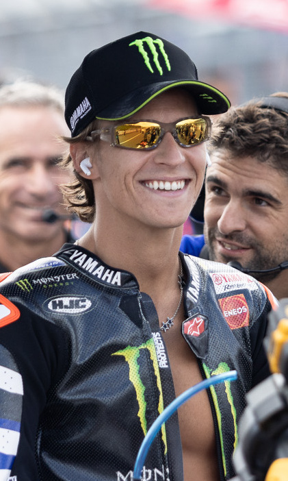

Fabio Quartararo: risultati e statistiche MotoGP 2026

Foto: TeamEG00 · Public domain, via Wikimedia Commons
Fabio Quartararo corre in MotoGP con il numero 20 per Monster Energy Yamaha MotoGP Team (Yamaha), nazionalità Francia. Nel Mondiale 2026 è 14° con 74 punti e 0 vittorie.
Fabio Quartararo è nato il 20 aprile 1999 a Nice, France, ha debuttato nel Motomondiale nel 2015.
Risultati Fabio Quartararo nel 2026
| Gran Premio | Sprint | Gara | Punti |
|---|---|---|---|
| GP Thailandia | 16° | 14° | 2 |
| GP Brasile | 6° | 16° | 4 |
| GP Stati Uniti | 11° | 17° | 0 |
| GP Spagna | 7° | 14° | 5 |
| GP Francia | 5° | 6° | 15 |
| GP Catalogna | 13° | 13° | 0 |
| GP Italia | 14° | 18° | 0 |
| GP Ungheria | 17° | OUTSTND | 0 |
| GP Repubblica Ceca | 13° | OUTSTND | 0 |
| GP Paesi Bassi | 10° | 8° | 8 |
| GP Germania | 9° | 7° | 10 |
| GP Gran Bretagna | 14° | 16° | 0 |
| GP Aragona | – | 18° | 0 |
| GP San Marino | 21° | 10° | 6 |
| GP Austria | 12° | 17° | 0 |
| GP Giappone | 9° | 12° | 5 |
| GP Indonesia | 9° | 9° | 8 |